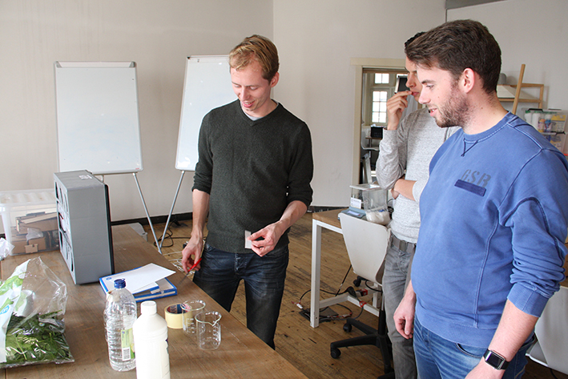
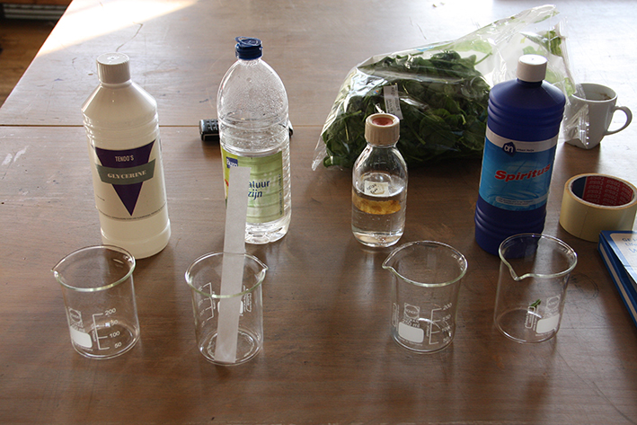
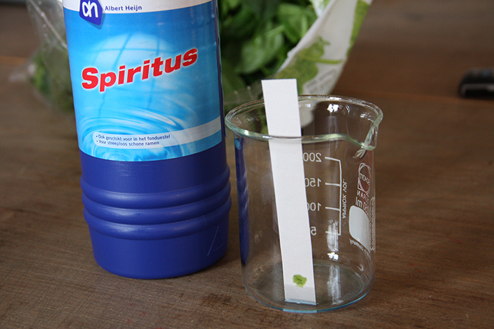
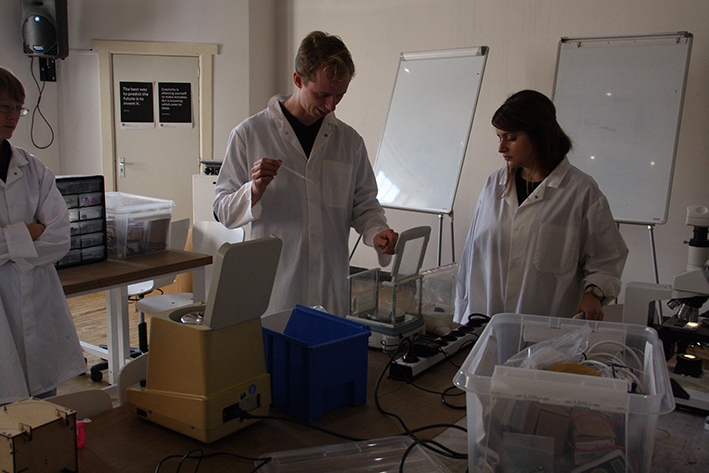
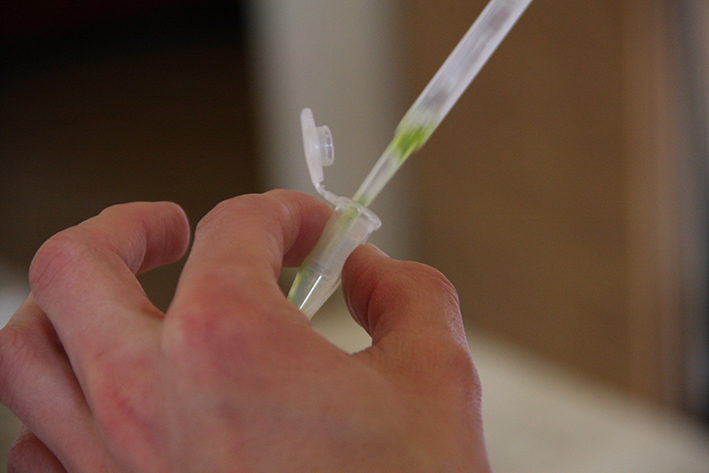
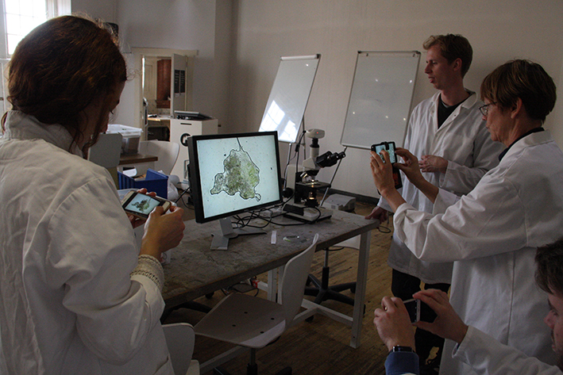

Margot2001.GitHub.io
10 weeks at the biohack academy at the Waag
Class 7 - Bioethics
Choloroplast Isolation

What is in this leave of spinach?

Many things! And one of them is chloroplast.
Chloroplasts are organelles, specialized subunits, in plant and algal cells.Chloroplasts' main role is to conduct photosynthesis, where the photosynthetic pigment chlorophyll captures the energy from sunlight and converts it and stores it in the energy-storage molecules ATP and NADPH while freeing oxygen from water. They then use the ATP and NADPH to make organic molecules from carbon dioxide in a process known as the Calvin cycle.
Chop the leaves as small as possible
Put this mash on some paper. We used lab filter paper, but that is quite expensive. We couldnt think of another cheaper paper. sorry.
Next we tested which medium breaks the cell of the spinach best so the chloroplasts can escape.




As you can see, aceton works best.

Of the other mash, transfer two times 2 mL to two centrifuge tubes, make sure they’re balanced, otherwise the centrifuge starts to wobble. Pieter used the digital scale to be sure.
Centrifuge at low speed (50x - 200x g) for 3 - 10 minutes to get rid of cell debris (white pellet)
Transfer the supernatant to two fresh centrifuge tubes, save 0.5 mL of each tube for later examination. Centrifuge at high speed (1000x g) for 10 minutes to pellet the chloroplasts.
Dispose the supernatant when you feel satisfied with the pellet, spin longer if you feel like it

Resuspend the pellet in 0.5 mL 80% acetone. Examine the samples under the microscope and/or measure the absorbance at OD650. You can count the number of Chloroplasts per mL. We didnt count them though...
Find the whole protocol here